기계설계산업기사 (2013-06-02 기출문제)
1과목: 기계가공법 및 안전관리
1. 내연기관의 실린더 내면에 진원도, 진직도, 표면거칠기 등을 더욱 향상시키기 위한 가공방법은?
- 래핑
- 호닝
- 수퍼피니싱
- 버핑
(정답률: 61%)

2. 연삭숫돌의 결합제와 기호를 짝지은 것이 잘못된 것은?
- 레지노이드-G
- 비트리파이드-V
- 셸락-E
- 고무-R
(정답률: 75%)
3. 선반에서 지름 125mm, 길이 350mm인 연강봉을 초경합금바이트로 절삭하려고 한다. 분당 회전수(r/min=rpm)는 약 얼마인가? (단, 절삭속도는 150m/min이다.)
- 720
- 382
- 540
- 1200
(정답률: 68%)
4. 밀링머신에서 할 수 없는 가공은?
- 총형 가공
- 기어 가공
- 널링 가공
- 나선홈 가공
(정답률: 82%)
5. 스핀들이 수직이며, 스핀들은 안내면을 따라 이송되며, 공구위치는 크로스 레일 공구대에 의해 조절되는 보링머신은?
- 수직 머링 머신
- 정밀 머링 머신
- 지그 머링 머신
- 코어 머링 머신
(정답률: 79%)
6. 허용한계치수의 해석에서 “통과측에는 모든 치수 또는 결정량이 동시에 검사되고 정지측에는 각각의 치수가 개개로 검사되어야 한다.”는 무슨 원리인가?
- 아베(Abbe)의 원리
- 테일러(Taylor)의 원리
- 헤르츠(Hertz)의 원리
- 후크(Hook)의 원리
(정답률: 70%)
7. 직접측정의 장점에 해당되지 않는 것은?
- 측정기의 측정범위가 다른 측정법에 비하여 넓다.
- 측정물의 실체를 직접 읽을 수 있다.
- 수량이 적고, 많은 종류의 제품 측정에 적합하다.
- 측정자의 숙련과 경험이 필요없다.
(정답률: 72%)
8. 회전 중에 연삭숫돌이 파괴될 것을 대비하여 설치하는 안전 요소는?
- 덮개
- 드레서
- 소화 장치
- 절삭유 공급 장치
(정답률: 87%)
9. 일반적으로 요구되는 절삭공구의 조건으로 적합하지 않은 것은?
- 고마찰성
- 고온경도
- 내마모성
- 강인성
(정답률: 76%)
10. 다음 중 일반적으로 표면정밀도가 낮은 것부터 높은 순서로 바른 것은?
- 래핑→연삭→호닝
- 연삭→호닝→래핑
- 호닝→연삭→래핑
- 래핑→호닝→연삭
(정답률: 66%)
11. 가공물이 대형이거나, 무거운 중량제품을 드릴 가공할 때에, 가공물을 고정시키고 드릴 스핀들을 암 위에서 수평으로 이동시키면서 가공할 수 있는 것은?
- 직립 드릴링 머신
- 레디얼 드릴링 머신
- 터릿 드릴링 머신
- 만능 포터블 드릴링 머신
(정답률: 65%)
12. 선반 작업에서 발생하는 재해가 아닌 것은?
- 칩에 의한 것
- 정밀 측정기에 의한 것
- 가공물의 회전부에 휘감겨 들어가는 것
- 가공물과 절삭 공구와의 사이에 휘감기는 것
(정답률: 85%)
13. 윤활방법 중 무명이나 털 등을 섞어 만든 패드의 일부를 기름통에 담가 저널의 아랫면에 모세관 현상을 이용하여 급유하는 것은?
- 적하 급유(drop feed oiling)
- 비말 급유(splash oiling)
- 패드 급유(pad oiling)
- 강제 급유(oil bath oiling)
(정답률: 82%)
14. 다이얼게이지의 사용상 주의사항이 아닌 것은?
- 스핀들이 원활이 움직이는가를 확인한다.
- 스탠드를 앞뒤로 움직여 지시값의 차를 확인한다.
- 스핀들을 갑자기 작동시켜 반복 정밀도를 본다.
- 다이얼게이지의 편차가 클 때는 교환 또는 수리가 불가능하므로 무조건 폐기시킨다.
(정답률: 71%)
15. 사인바로 각도를 측정할 때 몇 도를 넘으면 오차가 가장 심하게 되는가?
- 10°
- 20°
- 30°
- 45°
(정답률: 76%)
16. 밀링작업에서 상향절삭과 하향절삭의 특징을 비교했을 때 상향절삭에 해당하는 것은?
- 동력이 소비가 적다.
- 마찰열의 작용으로 가공면이 거칠다.
- 가공할 때 충격이 있어 높은 강성이 필요하다.
- 뒤틈(backlash) 제거장치가 없으면 가공이 곤란하다.
(정답률: 62%)
17. 선반에서 원형 단면을 가진 일감의 지름 100mm인 탄소강을 매분 회전수 314r/min(=rpm)으로 가공할 때, 절삭저항력이 736N 이었다. 이 때 선반의 절삭효율을 80%라 하면 필요한 절삭동력은 약 몇 PS인가?
- 1.1
- 2.1
- 4.4
- 6.2
(정답률: 42%)
18. 드릴링 머신의 안전 사항에서 틀린 것은?
- 장갑을 끼고 작업을 하지 않는다.
- 가공물을 손으로 잡고 드릴링하지 않는다.
- 얇은 판의 구멍 뚫기에는 나무 보조판을 사용한다.
- 구멍 뚫기가 끝날 무렵은 이송을 빠르게 한다.
(정답률: 84%)
19. 전해연삭 가공의 특징이 아닌 것은?
- 경도가 낮은 재료일수록 연삭능률이 기계연삭보다 높다.
- 박판이나 형상이 복잡한 공작물을 변형없이 연삭할 수 있다.
- 연삭저항이 적으므로 연삭열 발생이 적고, 숫돌 수명이 길다.
- 정밀도는 기계연삭보다 낮다.
(정답률: 44%)
20. 선반에서 이동용 방진구를 설치하는 곳은?
- 새들
- 주축대
- 심압대
- 베드
(정답률: 69%)
2과목: 기계제도
21. 그림과 같은 치수 120 숫자 위의 기호가 뜻하는 것은?
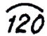
- 원호의 길이
- 참고 치수
- 현의 길이
- 각도 치수
(정답률: 83%)
22. 다음 중 ø50H7의 기준구멍에 가장 헐거운 끼워맞춤이 되는 축의 공차 기호는?
- ø50 f6
- ø50 n6
- ø50 m6
- ø50 p6
(정답률: 79%)
23. 그림과 같이 외경 50mm인 파이프를 용접기호와 같이 용접했을 때 총 용접선의 길이는?
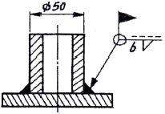
- 약 50mm
- 약 157mm
- 약 100mm
- 약 142mm
(정답률: 57%)
24. 그림과 같이 여러 개의 구멍이 일정한 간격으로 배치된 경우, 전체길이 값 "A"는 얼마인가?
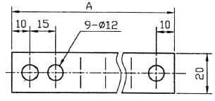
- 120
- 135
- 140
- 155
(정답률: 80%)
25. 나사의 호칭지름이 3/8in이고 1in 사이에 24산의 유니파이 가는 나사의 도시법으로 올바른 것은?
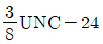
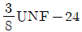
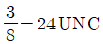
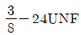
(정답률: 61%)
26. 다음 제 3각법에 대한 설명 중 올바른 것은?
- 배면도는 저면도 아래에 그린다.
- 정면도는 평면도 위에 그린다.
- 눈→투상면→물체의 순서가 된다.
- 좌측면도는 정면도의 우측에 위치한다.
(정답률: 79%)
27. 다음 도면에서 L에 들어갈 치수 값으로 옳은 것은?
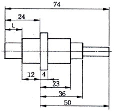
- 7
- 12
- 17
- 13
(정답률: 90%)
28. 선의 용도가 기술, 기호 등을 표시하기 위하여 끌어내는데 쓰이는 선의 명칭은?
- 기준선
- 가상선
- 지시선
- 절단선
(정답률: 84%)
29. 기계 가공면에 다음과 같은 기호가 표시되어 있을 때 이 기호의 의미는?
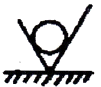
- 물체의 표면에 제거 가공을 허락하지 않는 것을 지시하는 기호
- 물체의 표면을 제거 가공을 필요로 한다는 것을 지시하는 기호
- 물체 표면의 결을 도시할 때에 대상면을 지시하는 기호
- 제거 가공의 필요 여부를 문제삼지 않는다는 것을 지시하는 기호
(정답률: 70%)
30. 표준 평기어의 피치원 지름을 D, 모듈율 m, 잇수를 z이라 할 때 피치원 지름을 나타내는 공식은?
- D=zm
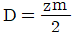
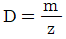
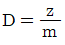
(정답률: 79%)
31. 그림과 같은 제3각 정투상도에서 나타난 정면도와 평면도에 가장 적합한 우측면도는?
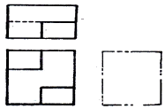
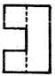
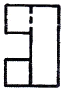
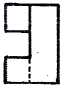
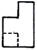
(정답률: 56%)
32. 다음 그림은 정면도와 측면도 모두 좌우 대칭인 열교환기 지지철물의 도면이다. 소요되는 모든 ㄱ형강의 중량은 약 몇 kgf인가? (단, ㄱ형강(L-65×65×6)의 단위 길이당 중량은 5.91kgf/m이고, 조립을 위한 볼트, 너트는 무시한다.)
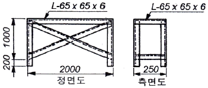
- 99
- 111
- 133
- 155
(정답률: 41%)
33. 금속 재료 기호가 SS400일 때 그 설명으로 옳은 것은?
- 탄소함유량이 0.40%인 기계 구조용 탄소 강재
- 탄소함유량이 0.40%인 일반 구조용 압연 강재
- 최저인장강도가 400kg/cm2인 기계 구조용 탄소 강재
- 최저인장강도가 400kg/mm2인 일반 구조용 압연 강재
(정답률: 73%)
34. 억지 끼워맞춤에서 조립 전의 구멍의 최대 허용치수와 축의 최소 허용치수와의 차를 무엇이라고 하나?
- 최대 틈새
- 최소 틈새
- 최대 죔새
- 최소 죔새
(정답률: 52%)
35. 그림과 같이 용접기호가 도시되었을 경우 그 의미로 옳은 것은?
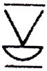
- 양면 V형 맞대기 용접으로 표면 모두 평면 마감처리
- 이면 용접이 있으며 표면 모두 평면 마감 처리한 V형 맞대기 용접
- 토우를 매끄럽게 처리한 V형 용접으로 제거 가능한 이면 판재 사용
- 넓은 루트면이 있고 이면 용접된 필릿 용접이며 윗면을 평면 처리함
(정답률: 69%)
36. 베어링 호칭번호가 다음과 같이 나타났을 경우 이 베어링에서 알 수 없는 항목은?
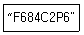
- 궤도륜 모양
- 베어링 계열
- 실드 시호
- 정밀도 등급
(정답률: 59%)
37. 그림의 입체도에서 화살표 방향이 정면일 때 평면도로 적합한 것은?
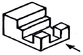
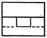
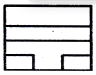
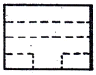
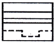
(정답률: 82%)
38. 단면의 표시와 단면도의 해칭에 관한 설명으로 올바른 것은?
- 단면 면적이 넓은 경우에는 그 외형선을 따라 적절한 범위에 해칭 또는 스머징을 한다.
- 해칭선의 각도는 주된 중심선에 대하여 60°로 하여 굵은 실선을 사용하여 동간격으로 그린다.
- 인접한 부품의 단면은 해칭선의 방향이나 간격을 변경하지 않고 동일하게 사용한다.
- 해칭 부분에 문자, 기호 등을 기입할 때는 해칭을 중단할 수 없다.
(정답률: 62%)
39. 기계제도에서 사용하는 척도에 대한 설명 중 틀린 것은?
- 공통적으로 사용한 주요 척도는 표제란에 기입한다.
- 추걱으로 제도한 경우에 치수 기입은 실제 치수가 아닌 실물의 실제 치수에 축척 비율이 적용된 값으로 기입한다.
- 그림의 일부를 확대하여 그려야 할 경우에는 배척 값을 선택하여 그릴 수 있다.
- 같은 도면에서 서로 다른 척도를 사용한 경우에는 해당 부품 번호의 참조 문자 부근에 척도를 기입한다.
(정답률: 73%)
40. 다음 끼워맞춤 중에서 헐거운 끼워맞춤인 것은?
- 50G7/h6
- 25N6/h5
- 20P6/h5
- 6JS7/h6
(정답률: 72%)
3과목: 기계설계 및 기계재료
41. 내식성과 내산화성이 크고, 성형성이 다른 것이 비해 좋은 비자성의 스테인리스강은?
- 페라이트계
- 마텐자이트계
- 오스테나이트계
- 석출경화형
(정답률: 55%)
42. 다음 중 복합재료에서 섬유강화금속은?
- GFRP
- CFRP
- FRS
- FRM
(정답률: 80%)
43. 다음 중 경금속이 아닌 것은?
- 알루미늄
- 마그네슘
- 백금
- 티타늄
(정답률: 53%)
44. 두랄루민은 Al에 어떤 원소를 첨가한 합금인가?
- Cu+Mg+Mn
- Fe+Mo+Mn
- Zn+Nj+Mn
- Pb+Sn+Mn
(정답률: 86%)
45. 표면 경화법에서 금속 침투법이 아닌 것은?
- 세라다이징
- 크로마이징
- 칼로라이징
- 방전경화법
(정답률: 85%)
46. 황동에서 잔류응력에 의해서 발생하는 현상은?
- 탈아면 부식
- 고온 탈아연
- 저온 풀림경화
- 자연균열
(정답률: 68%)
47. 주철에 대한 설명으로 바르지 못한 것은?
- 시멘타이트+펄라이트의 회주철과, 페라이트+펄라이트의 백주철이 있다.
- 백주철을 열처리하여 연성을 부여한 주철을 가단주철이라 한다.
- 주철중의 Si의 공정점을 저탄소강영역으로 이동시키는 역할을 한다.
- 용융점이 낮고 주조성이 좋다.
(정답률: 49%)
48. Fe-C계 상태도에서 3개소의 반응이 있다. 옳게 설명한 것은?
- 공정-포정-편정
- 포석-공정-공석
- 포정-공정-공석
- 공석-공정-편정
(정답률: 72%)
49. 다음 중 뜨임처리의 목적으로 틀린 것은?
- 담금질 응력 제거
- 치수의 경년 변화 방지
- 연마 균열의 방지
- 내마멸성 저하
(정답률: 70%)
50. 다음 중 강의 5대 원소에 속하지 않는 것은?
- C
- Mn
- Cr
- Si
(정답률: 59%)
51. 3.68kW의 동력으로 회전하는 드럼을 블록 브레이크를 이용하여 제공하고자 할 때 브레이크의 용량(brake capacity)은 약 몇 MPaㆍm/s인가? (단, 브레이크 블록의 길이가 100mm, 너비 30mm이고, 접촉부 마찰계수는 0.2이다.)
- 0.12
- 0.25
- 0.64
- 1.23
(정답률: 21%)
52. 2줄 나사의 리드(lead)가 3mm인 경우 피치는 몇 mm인가?
- 1.5
- 3
- 6
- 12
(정답률: 56%)
53. 리벳 이음의 장점에 해당하지 않는 것은?
- 열응력에 의한 잔류응력이 생기지 않는다.
- 경합금과 같이 용접이 곤란한 재료의 결합에 적합하다.
- 리벳 이음한 구조물에 대해서 분해 조립이 간편하다.
- 구조물 등에 사용할 때 현장조립의 경우 용접작업보다 용이하다.
(정답률: 54%)
54. 롤러 체인 전동에서 체인의 파단하중이 1.96kN이고, 체인의 회전속도가 3m/s이며, 안전율(safety factor)을 10으로 할 때 전달 동력은 약 몇 W인가?
- 467
- 588
- 712
- 843
(정답률: 53%)
55. 스프링의 용도로 거리가 먼 것은?
- 진동 또는 충격에너지를 흡수
- 에너지를 저축하여 동력원으로 작용
- 힘의 측정에 사용
- 동력원의 제동
(정답률: 65%)
56. 베어링의 설계 시 주의사항으로 옳지 않은 것은?
- 마모가 적을 것
- 구조가 간단하여 유지보수가 쉬울 것
- 마찰저항이 크고 손실동력이 감소할 것
- 강도를 충분히 유지할 것
(정답률: 83%)
57. 축의 원주에 여러 개의 키를 가공한 것으로 큰 토크를 전달할 수 있고 내구력이 크며 축과 보스와의 중심축을 정확하게 맞출 수 있는 것은?
- 스플라인
- 미끄럼 키
- 묻힘 키
- 반달 키
(정답률: 73%)
58. 원주속도가 4m/s로 18.4kW의 동력을 전달하는 헬리컬기어에서 비틀림각이 30°일 때 축방향으로 작용하는 힘(추력)은 약 몇 kN인가?
- 1.8
- 2.3
- 2.7
- 4.0
(정답률: 34%)
59. 일정한 주기 및 진폭으로 반복하여 계속 작용하는 하중으로 편진하중을 의미하는 것은?
- 변동하중(variable load)
- 반복하중(repeated oad)
- 교번하중(alterate oad)
- 충격하중(impact oad)
(정답률: 74%)
60. 지름이 20mm인 축이 114rpm으로 회전할 때 최대 약 몇 kW의 동력을 전달할 수 있는가? (단, 축 재료의 허용전단응력은 39.2MPa이다.)
- 0.74
- 1.43
- 1.98
- 2.35
(정답률: 21%)
4과목: 컴퓨터응용설계
61. 곡면을 모델링하는 여러 방법들 중에서 평면도, 정면도, 측면도상에 나타난 곡면의 경계곡선들로부터 비례적인 관계를 이용하여 곡면을 모델링(mofeling)하는 방법은?
- 점 데이터에 의한 방식
- 쿤스(coons)방식
- 비례 전개법에 의한 방식
- 스윔(sweep)에 의한 방식
(정답률: 73%)
62. 2차원 직교좌표계 상의 점 (3, 4)은 원래 좌표계를 원점을 기준으로 반시계방향으로 30도 회전시킨 새로운 좌표계에서 어떤 좌표값을 가지는가?
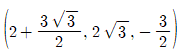
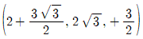
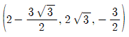
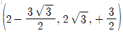
(정답률: 35%)
63. IGES(Initial Graphics Exchange Specification)에 대한 설명으로 옳은 것은?
- 널리 쓰이는 자동 프로그래밍 system의 일종이다.
- Wire frame 모델에 면의 개념을 추가한 data foramt이다.
- 서로 다른 CAD 시스템 간의 데이터의 호환성을 갖기 위한 표준 데이터 교환 형식이다.
- CAD와 CAM을 종합한 운영 프로그램의 일종이다.
(정답률: 77%)
64. 화면에 CAD 모델들을 현실감 있게 나타내기 위하여 채색이나 음영 등을 주는 작업을 무엇인가?
- Animation
- Simulation
- Modellung
- Rendering
(정답률: 79%)
65. 솔리드 모델링(Solid Modeling)에서 면의 일부 혹은 전부를 원하는 방향으로 당겨서 물체를 늘어나도록 하는 모델링 기능은?
- 트위킹(Tweaking)
- 리프팅(Lifting)
- 스위핑(Sweeping)
- 스키닝(Skinning)
(정답률: 74%)
66. 다음 설명에 해당하는 것은?
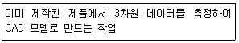
- Reverse engineering
- Feature-based modeling
- Digiral Mock-Up
- Virtual Manufacturing
(정답률: 68%)
67. 이미 정의된 두 곡면을 매끄럽게 연결하는 것을 무엇이라 하는가?
- 스위핑(sweeping)
- 스키닝(skinning)
- 블랜딩(blending)
- 리프팅(lifting)
(정답률: 74%)
68. 형상모델링 방법 중 솔리드 모델링(Solid Modeling)의 특징이 잘못 설명된 것은?
- 은선 제거가 가능하다.
- 단면도 작성이 어렵다.
- 불(Boolean) 연산에 의하여 복잡한 형상도 표현할 수 있다.
- 명암, 컬러 기능 및 회전, 이동 등의 기능을 이용하여 사용자가 명확히 물체를 파악할 수 있다.
(정답률: 73%)
69. 다음 중 무게중심을 구할 수 있는 모델은?
- 와이어프레임 모델
- 서피스 모델
- 솔리드 모델
- 쿤스 모델
(정답률: 79%)
70. 다음 설명의 특징을 가진 곡면에 해당하는 것은?
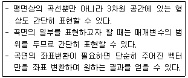
- 원추(Cone)곡면
- 퍼거슨(Ferguson)곡면
- 베지어(Bezier)곡면
- 스플라인(Spline)곡면
(정답률: 68%)
71. 다음 중 Bezier 곡선이 갖는 특징으로 옳지 않는 것은?
- 조정점(Control Point)의 개수와 곡선식의 차수가 직결되어 실제로 모든 조정점이 곡선의 형상에 영향을 준다.
- 복잡한 형상의 곡선생성을 위해 조정점의 수가 증가하게 되고 곡선 형상의 진동 등의 문제를 일으킬 수 있다.
- 두 개의 인접한 Bezier 곡선의 연결점에서 접선연속성과 곡률 연속성을 동시에 만족시키는 것은 불가능하다.
- 모든 조정점이 곡선의 형상에 영향을 주므로 부분적 형상 변경을 위해 조정점을 옮기면 곡선 전체의 형상이 변경되는 문제가 발생한다.
(정답률: 59%)
72. 그림과 같은 선분 A의 양 끝점에 대한 행렬 값
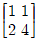
를 원점을 기준으로 하여 x방향과 y방향으로 각각 3배만큼 스케일링(scaling)할 때 그 행렬 값으로 옳은 것은?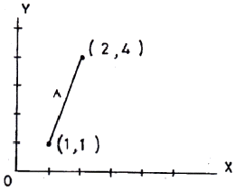
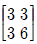
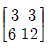
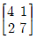
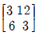
(정답률: 75%)
73. 솔리드 모델링에서 CSG 방식과 비교한 B-rep 방식의 특성이 아닌 것은?
- 저장 메모리가 적음
- 전개도 작성 용이
- 표면적 계산 쉬움
- 화면의 재생시간이 적게 걸림
(정답률: 60%)
74. 3차원 데이터에 대한 변환 매트릭스 중 X축에 대한 대칭의 결과를 얻기 위한 변환 매트릭스는?
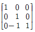
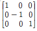
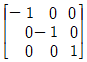
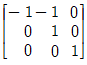
(정답률: 60%)
75. CAD 소프트웨어에서 명령어를 아이콘으로 만들어 아이템 별로 묶어 명령을 편리하게 이용할 수 있도록 한 것은?
- 툴바
- 스크롤바
- 스크린메뉴
- 풀다운메뉴바
(정답률: 82%)
76. 다음은 어떤 디스플레이 정치에 대한 설명인가?
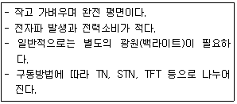
- OLED 디스플레이
- 액정 디스플레이
- 플라즈마 디스플레이
- 래스터 디스플레이
(정답률: 65%)
77. CAD 소프트웨어에서 형상 모델러가 하는 역할은?
- 컴퓨터 내에 저장되어 있는 형상정보는 인쇄하는 기능
- 물체의 기하학적인 형상을 컴퓨터 내에서 표현하는 기능
- 물체의 3차원 위상정보를 컴퓨터에 입력하는 기능
- 컴퓨터 내에 저장되어 있는 형상을 다른 소프트웨어로 보내는 기능
(정답률: 74%)
78. 구멍(hele), 슬롯(slot), 포켓(pocket) 등의 형상단위를 라이브러리(library)에 미리 갖추어 놓고 필요시 이들의 치수를 변화시켜 설계에 사용하는 모델링 방식은?
- Paeametric modeling
- Feature-based modeling
- Boundary modeling
- Boolean poeration modeling
(정답률: 59%)
79. 래스터 스캔 디스플레이에 직접적으로 관련된 용어가 아닌 것은?
- flicker
- Refresh
- Frame buffer
- RiSC
(정답률: 66%)
80. 데이터 표시 방법 중 3개의 Zone Bit와 4개의 Digit Bit를 기본으로 하며, Parity Bit 비트 적용 여부에 따라 총 7 Bit 또는 8 Bit 로 한 문자를 표현하는 코드 체계는?
- FPDF
- EBCDIC
- ASCII
- BCD
(정답률: 76%)